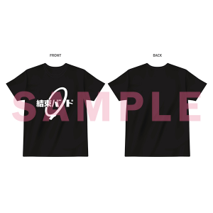
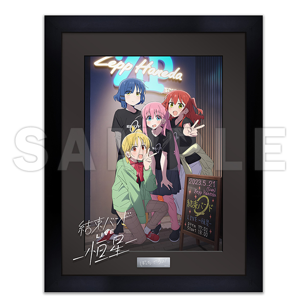
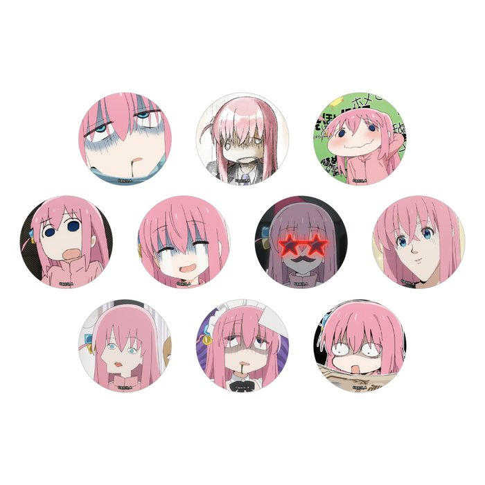
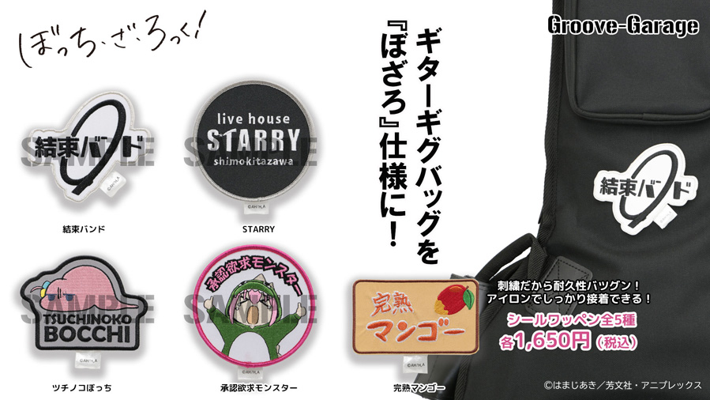
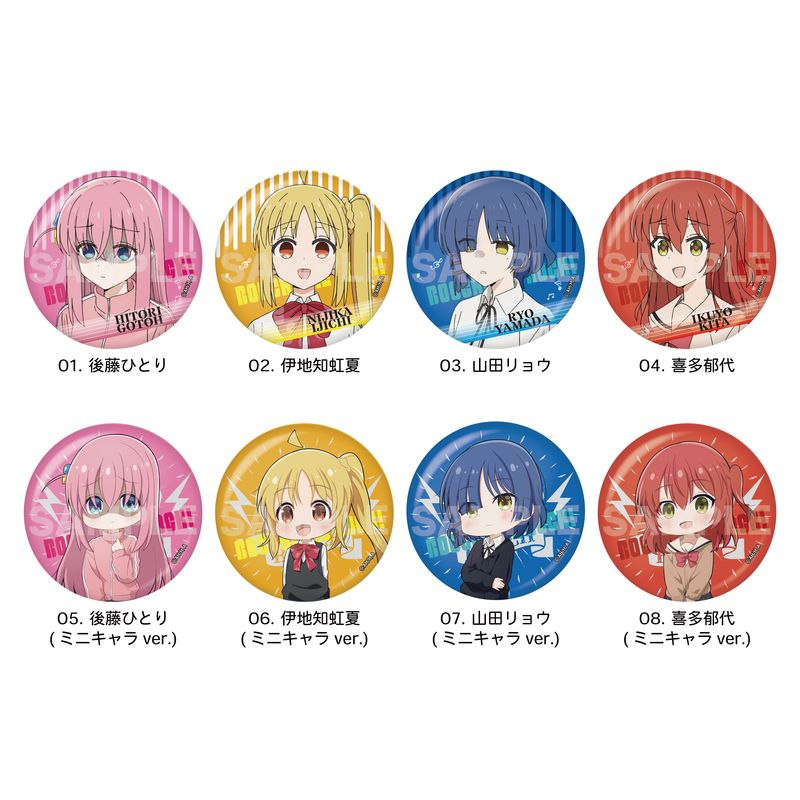
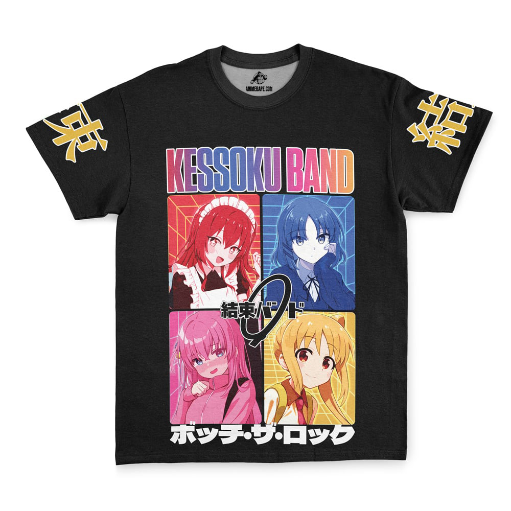
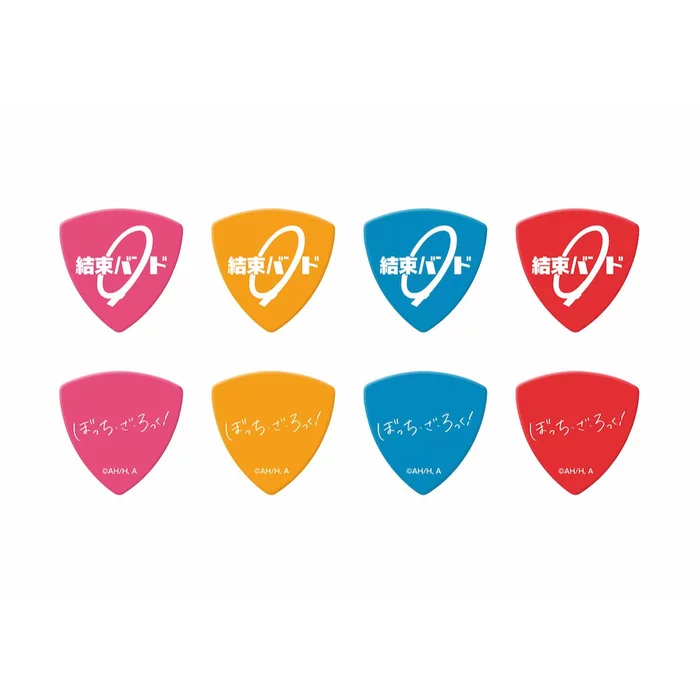
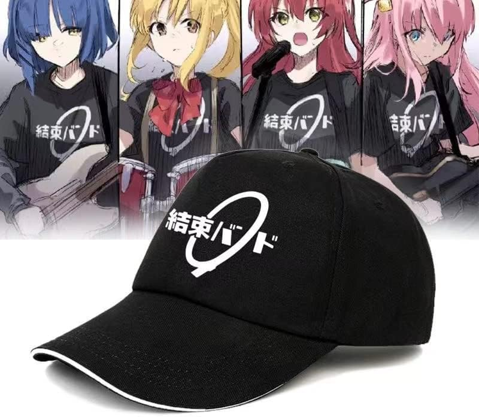
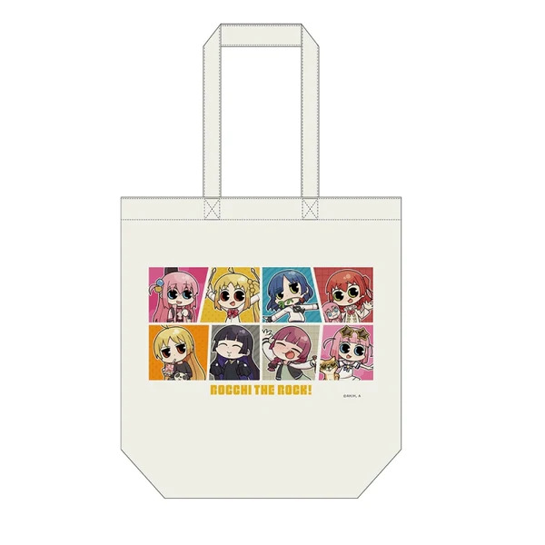
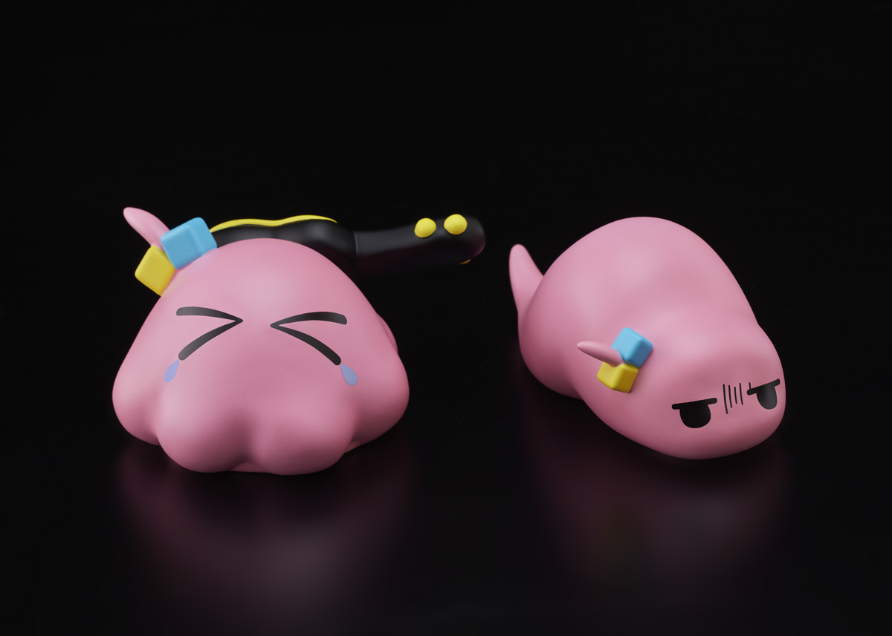

News
Store
Music
Meet the Band
About
結束バンド
Store!
「ぼっち・ざ・ろっく！です。」結束バンドTシャツ（再販／4サイズ)
ボッチ・ザ・ロック！ - コンプリート・シーズン - Blu-ray
「「結束バンドLIVE-恒星-」ライブビジュアル キャラファイングラフ ＜2サイズ＞
「ボッチ・ザ・ロック！です。後藤一人の変顔シングルピンバッジ（ランダム）
 ぼっち・ざ・ろっく！ シールワッペン5種
『ぼっち・ざ・ろっく！』メタリック缶バッジ 第1弾 全8種 BOXセット
「ケイソクバンド ぼっちザロック ストリートウェア Tシャツ
ぼっち・ザ・ロック! Vol. 1 (第 1 巻) (ぼっち・ザ・ロック!、1)
「ボッチ・ザ・ロック！です。ケソクバンドピックシングル（再演）
ケッソクバンドキャップ
『ぼっち・ザ・ロック!』 //PreOrder// トートバッグ (ちび2) - キャラクターグッズ
「後藤一人 ツチノコ＆メンダコVer デフォルメぼっちザロック フィギュアセット